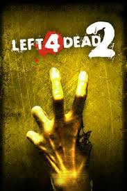

Left 4 Dead 2 es un videojuego de acción y disparos cooperativo en primera persona desarrollado por Valve y lanzado en 2009 como secuela de Left 4 Dead. El juego se centra en la supervivencia de cuatro jugadores que deben abrirse paso a través de distintos escenarios infestados de zombis y criaturas especiales controladas por la IA “Director”, la cual ajusta la dificultad, la ubicación de enemigos y la intensidad de los eventos para mantener la tensión. Combina acción rápida, cooperación, estrategia de equipo y momentos de terror, convirtiéndolo en un referente del género de shooters cooperativos.
Valve Corporation, con sede en Estados Unidos, es responsable del desarrollo y publicación de Left 4 Dead 2, utilizando el motor Source para ofrecer físicas realistas, efectos visuales detallados y un sistema dinámico de IA que hace cada partida distinta.
A lo largo de los años, el juego ha recibido actualizaciones que han mejorado estabilidad, corrección de errores, balance de armas y enemigos, así como nuevos contenidos descargables y mapas creados por la comunidad. Aunque Valve ya no lanza actualizaciones importantes de manera regular, la comunidad sigue activa mediante mods, mapas personalizados y servidores dedicados, manteniendo el juego vivo y popular entre los jugadores veteranos y nuevos.